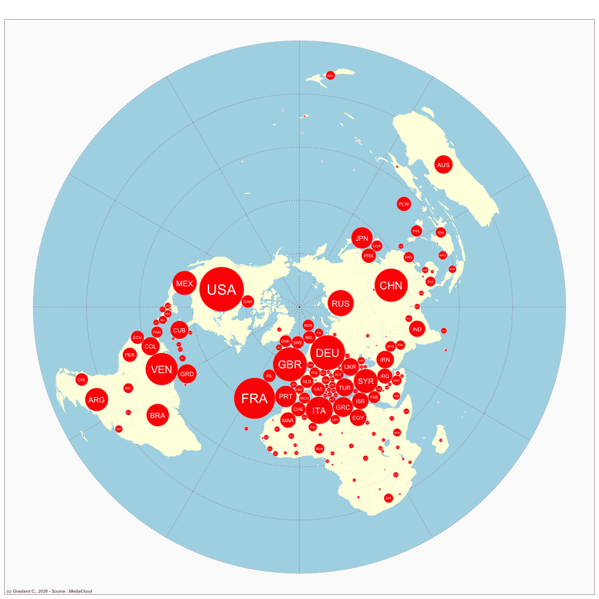

Spain
- Website : ABC
Scale
- Global
- National
Topics
- General news
- Political news
- Economic news
Publications
Lirola MM. 2017. Discursive legitimization of criminalization and victimization of sub-saharan immigrants in spanish el paı́s and ABC newspapers. Representing the Other in European Media Discourses. Amsterdam/Philadelphia: John Benjamins: 135–154